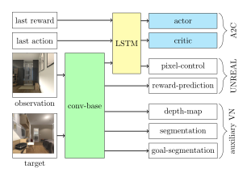

Deep reinforcement learning (RL) has been successfully applied to a variety of game-like environments. However, the application of deep RL to visual navigation with realistic environments is a challenging task. We propose a novel learning architecture capable of navigating an agent, e.g. a mobile robot, to a target given by an image. To achieve this, we have extended the batched A2C algorithm with auxiliary tasks designed to improve visual navigation performance.
We propose three additional auxiliary tasks: predicting the segmentation of the observation image and of the target image and predicting the depth-map.  These tasks enable the use of supervised learning to pre-train a large part of the network and to reduce the number of training steps substantially. The training performance has been further improved by increasing the environment complexity gradually over time. An efficient neural network structure is proposed, which is capable of learning for multiple targets in multiple environments. Our method navigates in continuous state spaces and on the AI2-THOR environment simulator outperforms state-of-the-art goal-oriented visual navigation methods from the literature.
@inproceedings{kulhanek2019vision,
title={Vision-based navigation using deep reinforcement learning},
author={Kulh{\'a}nek, Jon{\'a}{\v{s}} and Derner, Erik and De Bruin, Tim and Babu{\v{s}}ka, Robert},
booktitle={2019 European Conference on Mobile Robots (ECMR)},
pages={1--8},
year={2019},
organization={IEEE}
}